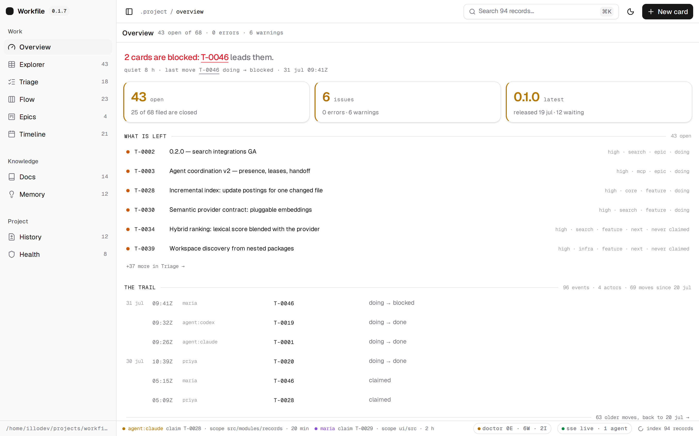
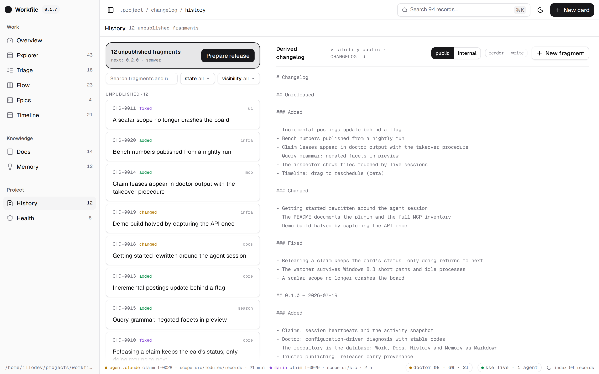

The repository
is the database.
Work, Docs, History and durable Memory as versioned Markdown — for humans and AI agents working in the same codebase. No SaaS, no lock-in, nothing your repository doesn't already have.
npx @illodev/workfile init
Four domains, one protocol
Every record is a Markdown file with frontmatter, validated and indexed. The CLI, the local UI, the HTTP API and the MCP server all speak through the same core.
Work
Cards with states, priorities, dependencies, epics and a Gantt — plus claims that say who is on it and over which paths.
Docs
Managed or merely indexed documentation, with backlinks, freshness warnings and broken-link diagnosis.
History
Structured change fragments that cut into releases and render your public CHANGELOG.md.
Memory
Decisions, learnings, incidents and expiring context — the knowledge that otherwise dies in chat threads.
Built for agents, honest for humans
An agent that discovers context, claims its scope, records what it learned and ships a changelog fragment — because the protocol makes that the path of least resistance.
MCP server
Local, dependency-free, stdio. Search, bounded context, mutations with revisions — read-only mode included.
Executable guard rails
Claims live in frontmatter. Hooks turn them into a real barrier: editing another actor's scope asks first.
Generated instructions
One canonical protocol, synchronized for Claude Code, Cursor and Copilot — never hand-drifted.

# Claude Code
/plugin marketplace add illodev/workfile
/plugin install workfile@illodev
From zero to protocol in one command
# scaffold .project/, agent instructions and CI npx @illodev/workfile init # the local board over your Markdown workfile ui # everything an agent needs to start workfile agents context --card T-0001
